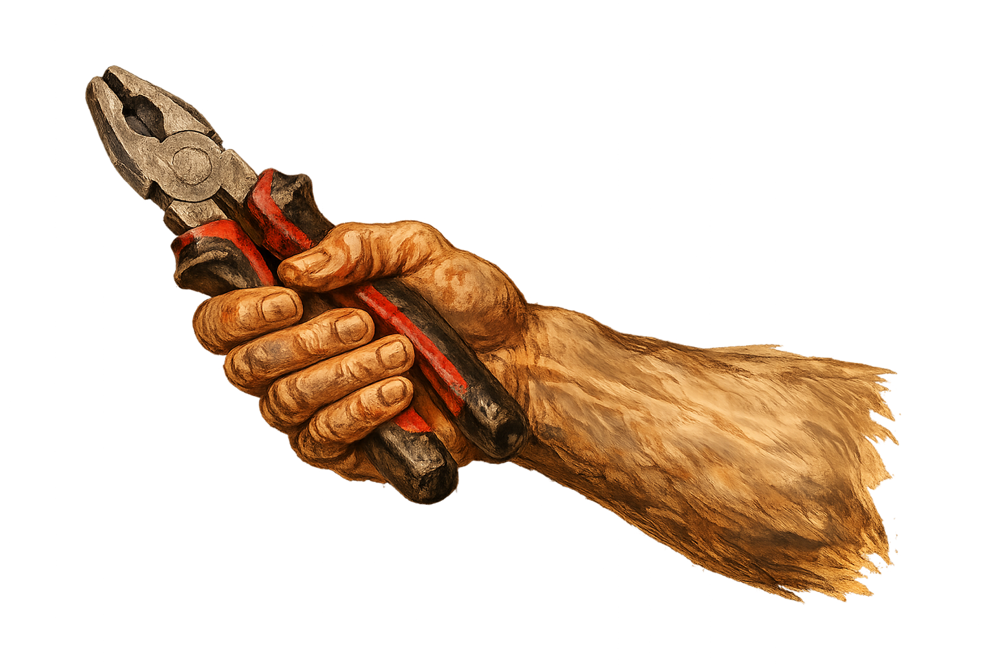
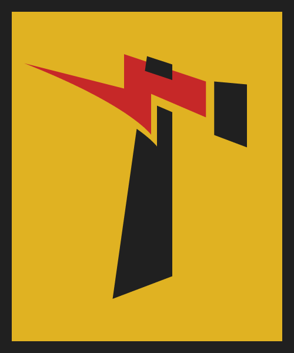
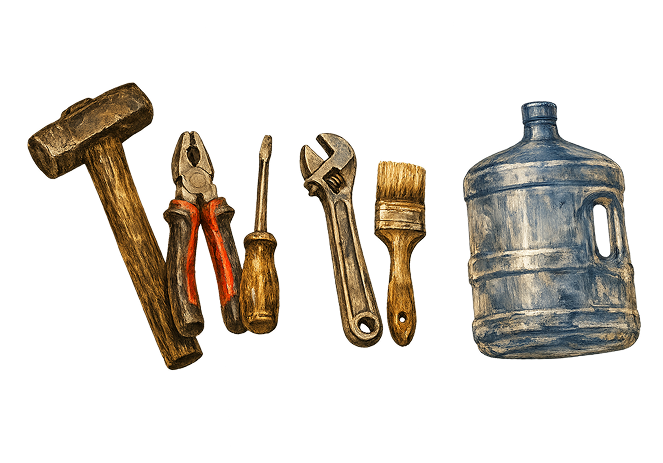
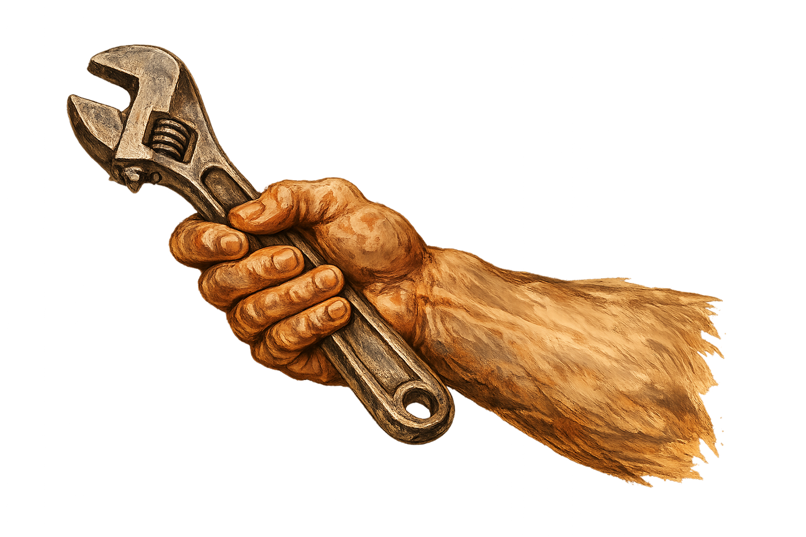

Perbaikan Pipa
Kebocoran, saluran mampet, dan instalasi air.
Lihat layanan →

Andalan Rumah Tangga, Sahabat Dompet Anda.
Tukang terverifikasi, harga jelas dari awal, dan perjalanan yang bisa Anda pantau langsung.
Demo interaktif — tanpa install, tanpa daftar akun.
Layanan inti dengan standar tarif yang jelas. Tidak perlu lagi bingung mencari tukang atau takut harga berubah di akhir.
Kebocoran, saluran mampet, dan instalasi air.
Lihat layanan →Lampu, stop kontak, korsleting, dan instalasi.
Lihat layanan →Cuci rutin, perbaikan, dan pengecekan AC.
Lihat layanan →Cat ulang, perbaikan dinding, dan finishing.
Lihat layanan →Perakitan, pemasangan, dan perbaikan ringan.
Lihat layanan →
Seluruh proses terjadi di aplikasi. Jelas, mudah dipantau, dan tanpa kejutan.
Ceritakan kebutuhan dan lokasi Anda.
Estimasi biaya tampil sebelum memesan.
Mitra terverifikasi menerima pesanan.
Lacak kedatangan dan status secara langsung.
Bayar digital lalu beri ulasan.
Setiap mitra melalui pemeriksaan identitas dan kemampuan dasar sebelum dapat menerima pekerjaan.
Pendapat awal dari calon pengguna dan mitra kami yang telah mencoba versi awal layanan.
"Akhirnya ada solusi yang jelas soal harga. Selama ini saya sering kena tagihan dadakan dari tukang. KangTukang bikin semuanya transparan."
"Saya tukang listrik delapan tahun. Susah cari pelanggan tetap. Kalau bisa dapat order rutin lewat aplikasi, saya langsung daftar."
"Ide yang keren. Tinggal buka HP, pilih layanan, tukang langsung datang — tanpa ribet nyari nomor atau tawar-menawar harga."
Lihat estimasi dan rincian biaya sebelum konfirmasi. Tidak ada lagi tebak-tebakan harga ketika tukang sudah tiba.

Penasaran rasanya memesan tukang lewat aplikasi? Coba demo interaktif kami — dari pilih layanan sampai beri rating, selesai dalam 3 menit.
Coba Demo SekarangAtau jadilah yang pertama tahu saat aplikasi kami resmi rilis.